|
序号 |
标注方法 |
公差带解释 |
|
1 |
给定圆锥角α与最大端圆锥直径D给出面轮廓度公差t 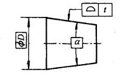 |
以理论正确圆锥角α和理论正确直径D来确定理想圆锥面。以面轮廓度公差t为球的直径（Sφt） 的―系列球的球心位于理想圆锥面上，形成了两个包络面，两包络面之间的区域即面轮廓度公差带，也即公差带是距离为公差值t与理想圆锥面同轴的两等距圆锥面之间的区域 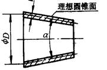 |
|
2 |
给定锥度C与最大端圆锥直径D给出面轮廓度公差t 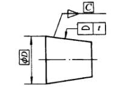 |
以理论正确锥度C和理论正确直径D来确定理想圆锥面。以面轮廓度公差为球的直径的一系列球位于此理想轮廓面上所形成的两等距圆锥面之间的区域，即控制实际圆锥面的公差带 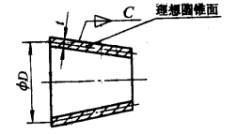 |
|
3 |
给定锥度C与轴向位置尺寸Lx和dx 以理论正确的C和Lx、dx给出面轮廓度公差t 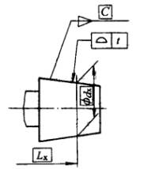 |
以基面距Lx处的直径dx与锥度C所确定的理想轮廓面，以面轮廓度公差t为球的直径的一系列球位于此理想轮廓面上所形成的两等距圆锥面之问的区域，即控制实际圆锥面的公差带 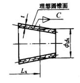 |
|
4 |
给定锥度C与轴向位置尺寸和公差Lx±δx
和 dx给出面轮廓度公差t 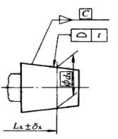 |
基面距Lx带有公差±δx
说明此距离是变化的。两个极端情况是以理论正确锥度C和dx与Lx+δx所组成的理想圆锥面和以理论正确锥度C和dx与Lx-δx所组成的理想圆锥面。实际情况则是处于两者之间,即+δx
> δ>-δx 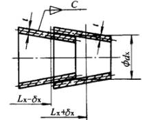 |
|
5 |
给定圆锥角α和最大端圆锥直径D 给出面轮廓度公差t,并和对于基准A（另―圆柱面的轴线）有位置要求 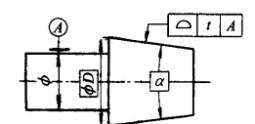 |
以理论正确圆锥角α和理论正确直径D以及面轮廓度公差t形成面轮廓度公差带,但此公差带的轴线必须与相邻圆柱体的轴线同轴 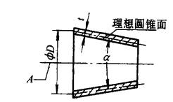 |
|
6 |
给定锥度C和最大圆锥直径D 给出面轮廓公差t,同时又给出倾斜度公差t1,用以对实际圆锥面相对理想圆锥面轴线的倾斜情况作进一步限制] 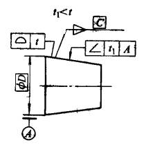 |
以理论正确锥度C和理论正确直径D与面轮廓度公差t形成面轮廓度公差带（斜线部分）.与此同时,相对于A基准轴线距离为t1的倾斜度公差带（点的部分）在面轮廓度公差带内,进一步限制实际圆锥面的倾斜 倾斜度公差带可以根据实际圆锥面的具体情况在面轮廓公差带内浮动 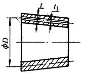 |